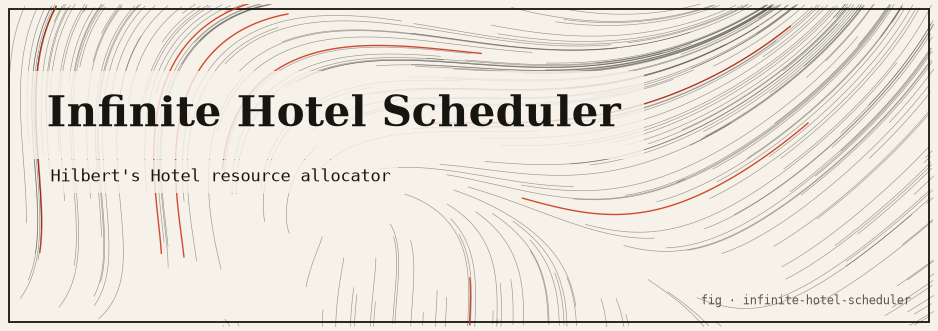

Infinite Hotel Scheduler: Hilbert’s Grand Hotel in code
Hilbert’s Infinite Hotel as a cloud scheduler — a resource allocator that is never full, using countable re-indexing to accommodate any number of new arrivals.

The idea
In 1924 David Hilbert offered a hotel to help people feel the strangeness of infinity. His Grand Hotel has countably infinitely many rooms — one for every natural number 1, 2, 3, … — and tonight every single room is occupied. A weary traveller arrives asking for a room. In a finite hotel the answer would be “sorry, we’re full.” In Hilbert’s hotel, the clerk simply asks each guest to move up one room: the occupant of room 1 goes to room 2, room 2 goes to room 3, and so on. Every guest still has a room, yet room 1 is now empty for the newcomer.
It gets stranger. Suppose an infinitely long coach pulls up carrying countably infinitely many new guests. The clerk asks every current occupant of room n to move to room 2n. Now all the even rooms are taken and every odd room — infinitely many of them — is free, exactly enough for the infinite coach. A hotel that was completely full has absorbed an infinite crowd without turning anyone away. This only looks paradoxical because our intuition is built for finite sets, where “full” genuinely means “no more room.”
This package dramatises the hotel as a resource scheduler. Worker slots are numbered by the natural numbers, and when every slot appears occupied the scheduler re-indexes existing jobs to open a vacancy, just as the clerk shuffles guests. It is a hands-on way to watch the arithmetic of countable infinity behave.
What is countable infinity?
A set is countably infinite if its elements can be put into a one-to-one correspondence — a bijection — with the natural numbers ℕ = {1, 2, 3, …}. The size (cardinality) of this set is written ℵ₀ (“aleph-null”). The counter-intuitive feature is that a countably infinite set can be matched perfectly with a proper subset of itself. There are, in this precise sense, exactly as many even numbers as there are natural numbers, because n ↔ 2n pairs them off with none left over.
Each move in the hotel is just such a bijection. The single-guest shift is the function f(n) = n + 1, which maps the occupied rooms onto {2, 3, 4, …} and leaves room 1 free. The infinite-coach shift is f(n) = 2n, which maps the occupied rooms onto the even numbers and frees the odds. Because both are genuine bijections, no guest is doubled up and no guest is lost; the hotel stays perfectly booked. Finite hotels have no such trick, which is exactly what makes ℵ₀ different from any finite number.
How this project demonstrates it
The scheduler numbers its slots like hotel rooms and implements the two classic re-indexings directly: the n → n+1 shift for a single arrival and the n → 2n shift for a countable batch. For nesting infinitely many coaches it uses a Cantor-style pairing based on unique prime factorisation, mapping each (coach, seat) pair to a distinct room so that no two guests ever collide.
Crucially, the program is honest about running on a real computer. Because physical memory is finite, the scheduler enforces an explicit MAX_SLOTS cap and refuses to re-index beyond it, raising a genuine “hotel full” error rather than pretending. Within that bound it faithfully reproduces the paradox’s mechanics, letting you seat “impossible” new arrivals and inspect the resulting room assignments.
The mathematics
Single arrival: move guest n → room (n+1) for all n Room 1 freed. O(N) shift. Countably infinite arrivals: move guest n → room (2n) All odd rooms freed. O(N) re-index. Countably many coaches of countably many guests: Cantor pairing: room (coach, seat) → room 2^coach × 3^seat (unique prime factorisation guarantees injectivity) Practical limit: scheduler enforces a MAX_SLOTS cap beyond which re-indexing is refused and a real "hotel full" error is raised.
Run it
git clone https://github.com/caelum0x/awesome-mad-projects.git cd infinite-hotel-scheduler go test ./... go run . # Hotel (100 slots): all occupied # New arrival → shift all guests up by 1 → slot 1 freed # Assigned: job-101 → slot 1 ✓
Infinite Hotel questions
What is Hilbert’s Infinite Hotel?
It is a thought experiment about a hotel with countably infinitely many rooms, all occupied. Even though it is full, it can still make room for new guests by shifting existing ones, illustrating how infinite sets behave differently from finite ones.
How does a full hotel fit one more guest?
Move the guest in room n to room n+1 for every n. This frees room 1 while still giving every original guest a room. It works because there is no last room for anyone to overflow out of.
How does it fit infinitely many new guests?
Move each guest from room n to room 2n. That empties every odd-numbered room — infinitely many of them — leaving space for a countably infinite coach of new arrivals to fill the odd rooms.
Honest caveat: a real computer has finite memory, so no program can actually host infinitely many guests. The scheduler enforces a MAX_SLOTS cap and raises a real “hotel full” error beyond it. It reproduces the re-indexing logic of the paradox on finite inputs; the true “never full” property holds only in the mathematical idealisation, not in RAM.